飢不擇食全餐
知識說你很解欸！
適用對象
1.不是不想要唸書，看到課本卻認輸
2.就是愛問為什麼，不要問我為什麼
3.被困在思考漩渦，真的想知道更多
外送到了 ! 您的專屬書籍菜單
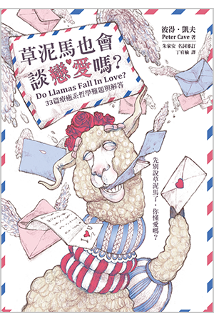
熱門書籍
《草泥馬也會談戀愛嗎？：33篇療癒系哲學難題與解答》
「草泥馬或田鼠懂不懂愛無所謂，你懂不懂愛比較重要。」
出版社 : 日月文化出版
作者 : 彼得．凱夫
出版年份 : 2020
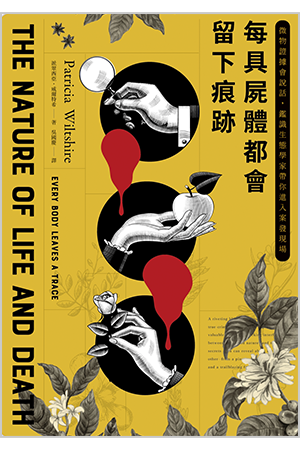
熱門書籍
《每具屍體都會留下痕跡：微物證據會說話，鑑識生態學家帶你進入案發現場》
「每個秘密的破解均揭露另個秘密的出現。」
出版社 : 八旗文化
作者 : 派翠西亞．威爾特希
出版年份 : 2020
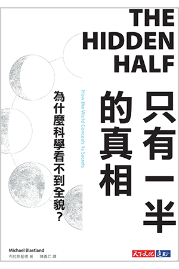
《只有一半的真相：為什麼科學看不到全貌？》
「阻礙人類進步的不是無知，而是自以為有知。」
出版社 : 天下文化
作者 : 布拉斯藍德
出版年份 : 2020
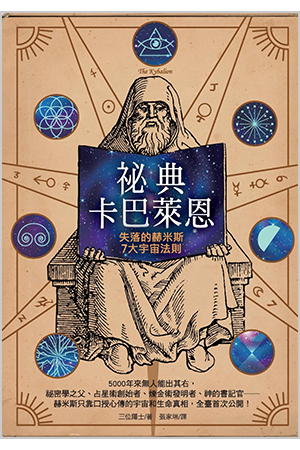
《祕典卡巴萊恩：失落的赫米斯7大宇宙法則》
「萬物都要服從宇宙的法則，但你仍有機會不成為法則的奴僕。」
出版社 : 柿子文化
作者 : 三位隱士
出版年份 : 2018
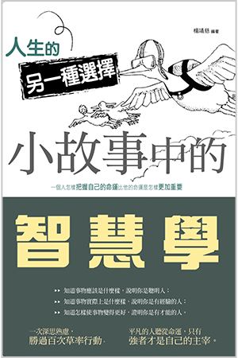
《人生的另一種選擇：小故事中的智慧學》
「一個人怎樣把握自己的命運比他的命運是怎樣更加重要。」
出版社 : 讀品文化
作者 : 楊靖慈
出版年份 : 2020
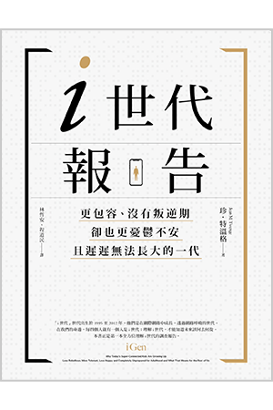
《i世代報告：更包容、沒有叛逆期，卻也更憂鬱不安，且遲遲無法長大的一代》
「其實，我們並不那麼理解i世代，甚至對所謂『世代差異』，都有太多的偏見。」
出版社 : 大家出版
作者 : 珍．特溫格
出版年份 : 2020
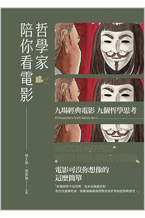
《哲學家陪你看電影》
「有犯罪意圖的人，就可被構成罪犯嗎？」
出版社 : 開學文化
作者 : 蔡士瑋，梁家瑜
出版年份 : 2019
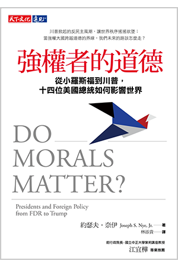
《強權者的道德：從小羅斯福到川普，十四位美國總統如何影響世界》
「在國家利益與全球公益之間，強國領導者如何抉擇？」
出版社 : 天下文化
作者 : 約瑟夫．奈伊
出版年份 : 2020
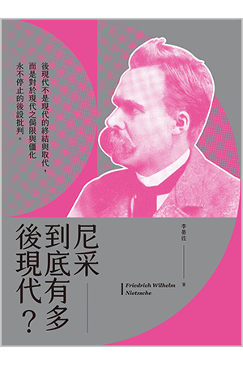
《尼采到底有多後現代？》
「後現代不是現代的終結與取代，而是對於現代之侷限與僵化永不停止的後設批判。」
出版社 : 開學文化
作者 : 李晏佐
出版年份 : 2020
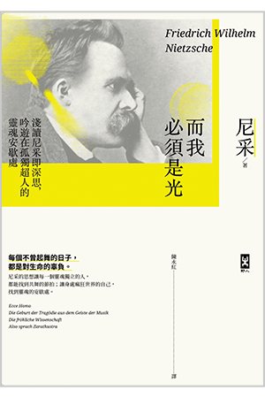
《而我必須是光：淺讀尼采即深思，吟遊在孤獨超人的靈魂安歇處》
「每個不曾起舞的日子，都是對生命的辜負。」
出版社 : 野人文化
作者 : 尼采
出版年份 : 2019
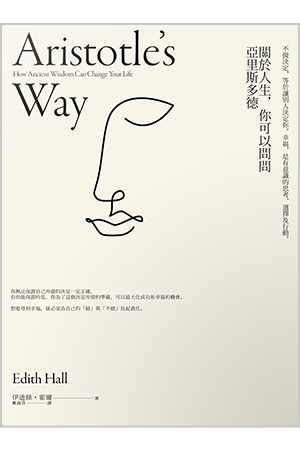
《關於人生，你可以問問亞里斯多德：不做決定，等於讓別人決定你。幸福，是有意識的思考、選擇和行動。》
「想要得到幸福，就必須為自己的『做』與『不做』負起責任。」
出版社 : 仲間出版
作者 : 伊迪絲．霍爾
出版年份 : 2019
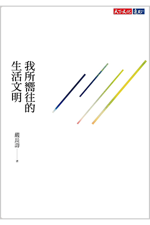
《我所嚮往的生活文明》
「疫情翻覆了世界原本的安定，卻也是我們脫胎換骨『轉大人』的契機。」
出版社 : 天下文化
作者 : 嚴長壽
出版年份 : 2021